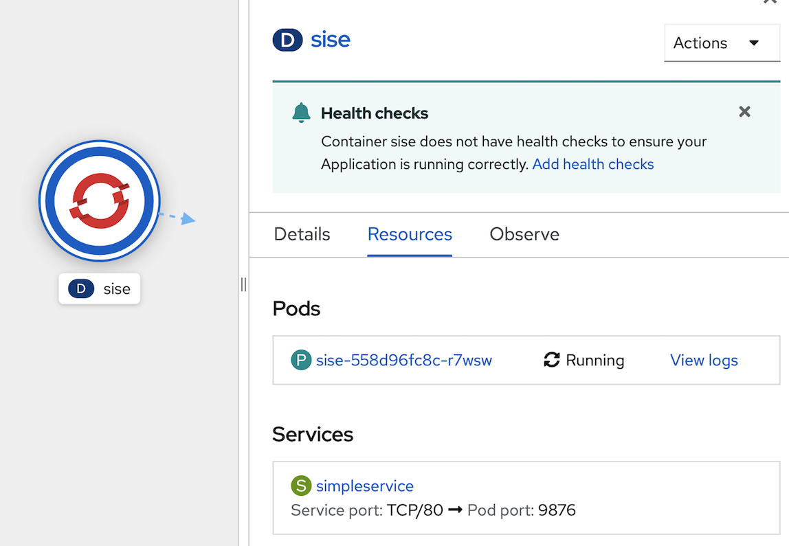

Basic Openshift Topology
Prerequisite
- Complete Deploy java application (quarkus) to openshift with s2i
- Go to your project (same as your username)
- Open Web Terminal by click '>_' on top of OpenShift Web Console
- use web terminal to run command line
Pods
A pod is a collection of containers sharing a network, acting as the basic unit of deployment in Openshift. All containers in a pod are scheduled on the same node.
To launch a pod using the container imagequay.io/openshiftlabs/simpleservice:0.5.0 and exposing a HTTP API on port 9876, execute:
oc run sise --image=quay.io/openshiftlabs/simpleservice:0.5.0 --port=9876
wait until sise pod circle change to dark blue Check to see if the pod is running:
oc get pods
Resulting in output similar to the following:
NAME READY STATUS RESTARTS AGE
sise 1/1 Running 0 2m
This container image happens to include a copy of curl, which provides an additional way to verify that the primary webservice process is responding (over the local net at least):
oc exec sise -t -- curl -s localhost:9876/info
This call should produce the output:
{"host": "localhost:9876", "version": "0.5.0", "from": "127.0.0.1"}
or use Openshift Web Console to terminal to this Pod
- In Topology Menu, click Pod 'sise'
- In Pod sise information (right side), click pods 'sise'
- In Pod detail page, click tab 'Terminal'
- Openshift will create terminal to your container in Pod, see below picture

- test call curl command in terminal
curl -s localhost:9876/info - click Topology menu in left pane to back to topology of your project
- clean up your 'sise' pod
- back to web terminal in buttom frame
- at command prompt call below command for clean up pod (click restart terminal if your terminal is terminated)
oc delete pod sise
- wait until pod 'sise' remove from your topology
Labels
Labels are the mechanism used to organize Kubernetes objects. A label is a key-value pair with certain restrictions concerning length and allowed values but without any pre-defined meaning. You're free to choose labels as you see fit, for example, to express environments such as "this pod is running in production" or ownership, like "department X owns that pod".
- Let's create a pod that initially has one label (env=development):
- Open Your Web Terminal and Check Current Project (same username)
- run yaml for create pod from https://raw.githubusercontent.com/openshift-evangelists/kbe/main/specs/labels/pod.yaml
oc apply -f https://raw.githubusercontent.com/openshift-evangelists/kbe/main/specs/labels/pod.yaml
- The get subcommand can be used to display a pod's labels:
The labels are rendered as an additional column in the output:oc get pods --show-labelsNAME READY STATUS RESTARTS AGE LABELS labelex 1/1 Running 0 6s env=development - edit label with Openshift Web Console
- click Pod 'labelex' on Topology page
- in Pod 'labelex' information click tab Details
- click edit link (near pencil icon) at lables section to view Edit labels
- add 'owner=userx', change userx to your username such as user1 and save

- view change

- use label for select Openshift Object
- To use a label for filtering, use the -l option: (change user1 to your username)
oc get pods -l owner=user1
- To use a label for filtering, use the -l option: (change user1 to your username)
- clean up pod 'labelex'
oc delete pods labelex
Deployment
A deployment is a supervisor for pods, giving you fine-grained control over how and when a new pod version is rolled out as well as rolled back to a previous state.
- Let's create a deployment called
sise-deploythat produces two replicas of a pod as well as a replica set: (from https://raw.githubusercontent.com/openshift-evangelists/kbe/main/specs/deployments/d09.yaml)oc apply -f https://raw.githubusercontent.com/openshift-evangelists/kbe/main/specs/deployments/d09.yaml - wait to deployment done, check result from Topology Page
check result from Web Terminal
oc get pod,replicaset,deploymentThe result is separated by resource type and reflects all of the resources created by the deployment:
NAME READY STATUS RESTARTS AGE pod/sise-deploy-747848cd97-j2m9q 1/1 Running 0 90s pod/sise-deploy-747848cd97-kr9kd 1/1 Running 0 90s NAME DESIRED CURRENT READY AGE replicaset.apps/sise-deploy-747848cd97 2 2 2 90s NAME READY UP-TO-DATE AVAILABLE AGE deployment.apps/sise-deploy 2/2 2 2 90s- At this point in time the sise containers running in the pods are configured to return the version 0.9. Let's verify this from within the cluster using curl:
The output reflects the current version of the deployed application:POD=$(oc get pods --no-headers -l app=sise | grep sise |head -n 1| awk '{print $1}') oc exec $POD -t -- curl -s 127.0.0.1:9876/info{"host": "127.0.0.1:9876", "version": "0.9", "from": "127.0.0.1"} - Let's now see what happens if we change that version to 1.0 in an updated deployment: https://raw.githubusercontent.com/openshift-evangelists/kbe/main/specs/deployments/d10.yaml
wait until redeploy complete!, in Topology , you will can see deployment redeploy from 0.9 to 1.0oc apply -f https://raw.githubusercontent.com/openshift-evangelists/kbe/main/specs/deployments/d10.yaml - run command to check have redeploy to new version
result of commandoc get pods -l app=siseNAME READY STATUS RESTARTS AGE sise-deploy-67fd84bd5c-cvwpk 1/1 Running 0 35s sise-deploy-67fd84bd5c-wn9zh 1/1 Running 0 38s - To verify that if the new 1.0 version is really available
The output reflects the current version of the deployed application:POD=$(oc get pods --no-headers -l app=sise | grep sise |head -n 1| awk '{print $1}') oc exec $POD -t -- curl -s 127.0.0.1:9876/info{"host": "127.0.0.1:9876", "version": "1.0", "from": "127.0.0.1"} - A history of all deployments is available via the
rollout historysubcommand:
resultoc rollout history deploy/sise-deploydeployment.apps/sise-deploy REVISION CHANGE-CAUSE 1 <none> 2 <none> - to rollback to the last successful deployed revision of your configuration
wait until reploy complete (sise-deploy circle change to dark blue color), and retest call with curl commandoc rollout undo deploy/sise-deploy - Clean Up
oc delete deploy sise-deploy
Service
Services
A service is an abstraction for pods, providing a stable, so called virtual IP (VIP) address. While pods may come and go and with it their IP addresses, a service allows clients to reliably connect to the containers running in the pod using the VIP. The "virtual" in VIP means it is not an actual IP address connected to a network interface, but its purpose is purely to forward traffic to one or more pods. Keeping the mapping between the VIP and the pods up-to-date is the job of kube-proxy, a process that runs on every node, which queries the API server to learn about new services in the cluster.
Let's create a new pod supervised by a replication controller and a service along with it:
- run below command in web terminal : 1st commond for deployment object and 2nd command for service
- https://raw.githubusercontent.com/chatapazar/openshift-workshop/main/manifest/deployment.yaml
- https://raw.githubusercontent.com/chatapazar/openshift-workshop/main/manifest/svc.yaml
oc apply -f https://raw.githubusercontent.com/chatapazar/openshift-workshop/main/manifest/deployment.yaml oc apply -f https://raw.githubusercontent.com/chatapazar/openshift-workshop/main/manifest/svc.yaml
- see deployment, pod and service in topology view 
- Verify the pod is running:
oc get pods -l app=sise - get Pod Name
POD=$(oc get pods --no-headers -l app=sise | grep sise |head -n 1| awk '{print $1}') echo $POD - A new pod name should be generated each time this example is run. Make sure to include your own pod name when running the following examples:
oc describe pod $POD - The output should appear similar to the following (which has been truncated for readability):
... Status: Running IP: 10.131.0.51 IPs: IP: 10.131.0.51 Controlled By: ReplicaSet/sise-558d96fc8c ... - You can, from within the cluster, access the pod directly via its assigned IP (change pod name and ip address from describe pod):
oc exec $POD -t -- curl -s <ip address>:9876/info - This is however, as mentioned above, not advisable since the IPs assigned to pods may change as pods are migrated or rescheduled. The service created at the start of this lesson, simpleservice, is used to abstract the access to the pod away from a specific IP:
oc get service/simpleservice - From within the cluster, we can now access any affiliated pods using the IP address of the simpleservice svc endpoint on port 80. KubeDNS even provides basic name resolution for Kubernetes services (within the same Kubernetes namespace). This allows us to connect to pods using the associated service name - no need to including IP addresses or port numbers.
oc exec $POD -t -- curl -s simpleservice/info - Let’s now add a second pod by scaling up the RC supervising it:
oc scale --replicas=2 deployment/sise - Wait for both pods to report they are in the "Running" state:
sample outputoc get pods -l app=sise
see pod in deployment info pageNAME READY STATUS RESTARTS AGE sise-558d96fc8c-7nblw 1/1 Running 0 18s sise-558d96fc8c-r7wsw 1/1 Running 0 13m - test call service, you can see out put from 2 pods
sample outputoc exec $POD -t -- curl -s simpleservice/infooc exec $POD -t -- curl -s simpleservice/info {"host": "simpleservice", "version": "0.9", "from": "10.131.0.38"} oc exec $POD -t -- curl -s simpleservice/info {"host": "simpleservice", "version": "0.9", "from": "10.131.0.1"} oc exec $POD -t -- curl -s simpleservice/info {"host": "simpleservice", "version": "0.9", "from": "10.131.0.38"} oc exec $POD -t -- curl -s simpleservice/info {"host": "simpleservice", "version": "0.9", "from": "10.131.0.1"}
Route
route exposes a service at a host name, like www.example.com, so that external clients can reach it by name.
- create route for service
oc expose service/simpleservice - get route from command line
example outputoc get route simpleserviceNAME HOST/PORT PATH SERVICES PORT TERMINATION WILDCARD simpleservice simpleservice-user1.apps.cluster-4b8f.4b8f.sandbox930.opentlc.com simpleservice 9876 None - or get route from web console, go to topology, click sise deployment, view Route
- test call route from command line (in your laptop or web terminal)
examplecurl http://$(oc get route simpleservice -o jsonpath='{.spec.host}')/infobash-4.4 ~ $ oc get route simpleservice NAME HOST/PORT PATH SERVICES PORT TERMINATION WILDCARD simpleservice simpleservice-user1.apps.cluster-4b8f.4b8f.sandbox930.opentlc.com simpleservice 9876 None bash-4.4 ~ $ curl http://simpleservice-user1.apps.cluster-4b8f.4b8f.sandbox930.opentlc.com/info {"host": "simpleservice-user1.apps.cluster-4b8f.4b8f.sandbox930.opentlc.com", "version": "0.9", "from": "10.128.2.26"} bash-4.4 ~ $ clean up application
oc delete route simpleservice oc delete -f https://raw.githubusercontent.com/chatapazar/openshift-workshop/main/manifest/svc.yaml oc delete -f https://raw.githubusercontent.com/chatapazar/openshift-workshop/main/manifest/deployment.yaml